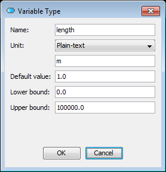
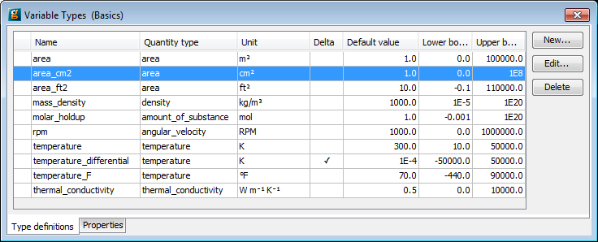
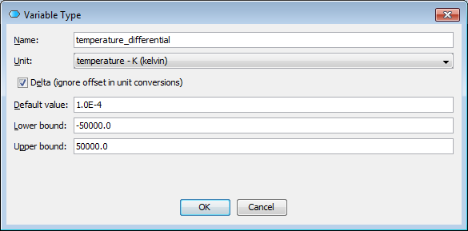
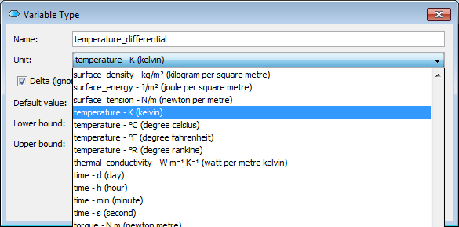

In the Project tree, expanding a Project or Library reveals the first Entity type - Variable Types. In order to create your own Variable Type, you can either select New entity.... from the Entity menu - choosing Variable Type as the Entity type (see also: Entities) or by editing an existing Variable Type and making changes to the Variable Types table, shown below, by typing the name in the <new> row and pressing enter.
Once the Variable Type has been introduced, different information is displayed on whether or not selectable units of measurement are enabled or if fixed and text-only units are used. In the latter case the following information should be provided
A default value for Variables of this type. This value will be used as an initial guess for any iterative calculation involving Variables of this type, unless it is overridden for individual Variables or a better guess is available from a previous calculation.
Upper and lower bounds for values of Variables of this type. Any calculation involving Variables of this type must give results that lie within these bounds. These bounds can be used to ensure that the results of a calculation are physically meaningful. Again, these bounds may be overridden1It is possible to override the bounds on certain Variables. This is done using in PRESET section of the Process entity.for individual Variables of this type.
An optional text-only unit of measurement. This unit of measurement is for informational purposes only and aids readability.
Each entry in the table can be edited by choosing the “Edit...” button or by performing a double-click on the row. This brings up a dialog such as the following:

Editing Variable Types
The values of the lower bounds, initial values and upper bounds are checked for consistency (i.e. an initial value outiside of the bounds or lower bounds being greater than upper bounds, are not permitted). Any violation will result in a diagnostic message appearing in the dialog, providing information about the violation. The unit selection offers a “Plain-text” unit or “(no unit)” as a choice.
If selectable units of measurement are enabled, more information is displayed, as shown in the table below.

Editing Variable Types with units of measurement
Quantity types display the name of the physical quantity that is associated with a unit of measurement; it also has information about its fundamental dimensions, which are currently only stored internally.
Unit displays the symbol associated with the chosen unit of measurement and default value denotes if a variable that is based on such a Variable Type is expressing a difference (e.g. a temperature difference between an ambient and an internal temperature). See below for a more detailed explanation.
Editing a Variable Type will bring up a dialog similar to the following:

Variable Type editor with units of measurement
The Delta flag is important for unit conversions, e.g in specification dialogs. Units are internally represented as affine transformations (y = ax+b)relative to a reference unit of measurement and the offset needs to be ignored during conversions of differences (e.g. for a temperature difference, the offset in degrees Celsius needs to be ignored in the conversion to Kelvin).
The Unit field here offers a choice of units of measurement in the drop-down box; they are ordered by physical quantity for ease of access and pressing a letter on the keyboard will jump to the first unit of measurement starting with this letter. The list of available units of measurement is pre-defined and, at present, cannot be changed by the user.
It is important to understand that the chosen unit of measurement also determines the quantity type and that it cannot be chosen independently. See also how to define public model interfaces and how to make specifications on flowsheets.

Choice of units of measurement